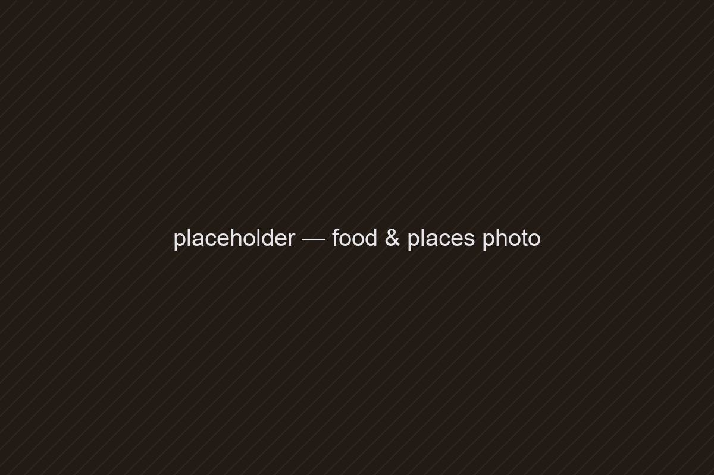

Best Vada Pav Spots in Mumbai
Six stalls across two days, from Dadar to Thane. Ranked by the chutney, the pav, and whether the queue was worth it.

Mumbai runs on vada pav. It is breakfast for people sprinting for the fast local, lunch for people who forgot lunch, and the thing everyone argues about on the train home. I gave myself two days, a train pass and one rule: order the plain one first. No cheese, no schezwan.
Here is where I ended up, in the order I would send a friend.
1. Ashok Vada Pav
The one every list mentions, and for once the list is right. The vada goes from the kadhai straight into your hand, the dry garlic chutney has real heat, and the fried batter crumbs they call chura are the move. Ask for extra.
- Location
- Kirti College Lane, Dadar West
- Price range
- ₹ · street stall (budget)
- Go when
- Late morning, before the college crowd
- must try
- Vada pav with extra chura
2. Aaram Vada Pav
Built for speed. Softer pav, a milder green chutney and the fastest turnaround of the trip. This is the one to grab when your train is already on the board.
3. Gajanan Vada Pav
Worth the ride out. The vada is bigger, the pav is toasted on the tawa, and the red chutney tastes like someone's grandmother makes it every morning. Probably someone's grandmother does.
Those are my top three out of six. If I missed your favourite, tell me on Instagram. I will go.

Building rockets in Delhi, eating my way through every city I visit, and writing both down.
Get the next one by email
Food finds, engineering notes and the odd essay. One email per post, sent through Substack.
No spam. Unsubscribe any time.